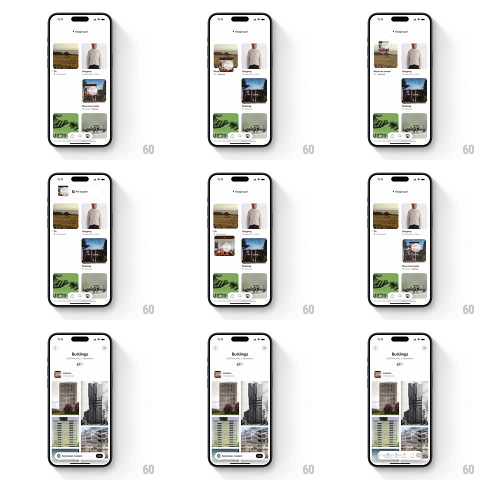

Media
Frame-by-frame

Rebuild this interaction 1:1: Cosmos' cluster pinning - dragging a saved-image cluster from the grid pins it into another cluster, which then expands into its own board view with a "Subcluster created" confirmation.

Rebuild this interaction 1:1: Cosmos' cluster pinning - dragging a saved-image cluster from the grid pins it into another cluster, which then expands into its own board view with a "Subcluster created" confirmation.
## Integration
Integration: stack-agnostic spec - springs given as stiffness/damping, timed motions as duration + curve; map every value to your framework and animation library of choice.
## Scene
White gallery app: a 2-column grid of cluster cards (CA, Shopping, Interiors, Buildings) with rounded thumbnails and counts, a bottom tab bar, and a "Drag to pin" hint at top during the drag. A floating cluster chip ("Pin cluster") follows the drag. The destination board ("Buildings") shows a header with cover thumbnail, Interiors subcluster, and a masonry of architecture photos.
## Motion spec
Pattern: drag-to-nest with board transition, gesture-driven.
- Lift: long-pressing a cluster lifts it (scale 1 -> 1.05, shadow deepens, 150ms); remaining cards stay put.
- Drag: the chip follows the finger 1:1; hovering a target cluster highlights it (border + scale 1.03, 150ms) and shows "Move into cluster".
- Drop: releasing over the target snaps the chip into it (spring ~340/22); the source grid slot collapses (height 0, 250ms).
- Reveal: the target cluster expands to its board view (400ms, ease-out) - header fades in, masonry items stagger up (50ms apart), and a dark "Subcluster created" toast slides up from the bottom (300ms), auto-dismissing after 2s.
## Calibration
- The drop target is the whole cluster card, not a drop zone icon.
- The grid never re-flows until the dragged card's slot collapses.
## Reduced motion
Chip fades into the target; board cross-fades in (250ms); toast fades.
## Don't miss
- The "Drag to pin" hint replaces the header only while a drag is active.
- The toast is a dark pill with the new subcluster's thumbnail and an Undo-style action.